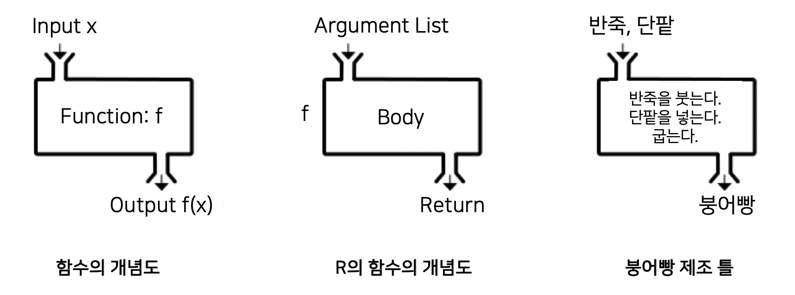

모든 연산자는 함수다
들어가기
UNIX나 Linux의 쉘 스크립트에서의 파이프의 기능은 필수 불가결하다. 마치 파이프라인을 엮어서 물을 원하는 방향으로 흘려보내는 듯한 자유로운 파이프의 구사는 스크립트의 성능을 배가시켜 준다.
tidyverse패키지군을 사용할 때에도 파이프 기능을 이용해서 표현식을 엮어 주는 것이 효율적이다. 그리고 파이프 연산을 기술할 때, “모든 연산자는 함수다”라는 특징을 이용하면 유용하다.
이 토픽은 연산자를 함수처럼 사용할 수 있는 방법을 제시한다. 아주 가끔 응용할 수 있는 유용한 팁이다.
연산자란?
연산자(operator)는 논리식이나 산술연산 등 다양한 연산처리를 수행하며 표현식(expression)에서 미리 정의된 기호로 표현된다.
통상적으로 연산자는 하나 이상의 피연산자(operend)와 결합하여 연산을 수행한다. 변수(variable)나 상수(constant)가 피연산자로 사용되며, 피연산자의 수에 따라 분류도 가능하다.
단항 연산자
하나의 피연산자를 갖는 연산자를 단항 연산자라 한다. 논리부정(indicates logical negation, NOT)을 수행하는 연산자가 대표적인 단항 연산자다.
# 상수를 피연산자로 갖는 단항 연산자
!TRUE
[1] FALSE
# 변수를 피연산자로 갖는 단항 연산자
flag <- TRUE
!flag
[1] FALSE다항 연산자
두개 이상의 피연산자를 갖는 연산자를 다항 연산자라 한다. 두개의 피연산자를 갖는 이항 연산자가 대부분이다. C언어의 경우에는 3개의 피연산자를 갖는 연산자가 존재하지만, R에서는 다항 연산자를 이항 연산자로 갈음해도 무방하다.
우리가 즐겨 사용하는 산술 연산자(arithmetic operators)도 이항 연산자다.
# 상수를 피연산자로 갖는 이항 연산자 - 산술 연산자
pi + 5
[1] 8.141593
# 변수를 피연산자로 갖는 이항 연산자 - 관계 연산자 (relational operators)
idx <- 2
idx > 0
[1] TRUE앞의 예제에서 <- 도 이항 연산자로서의 할당 연산자(assignment operators)다. 이 연산자는 우측의 피연사의 값을 좌측의 피연산자이 이름에 할당한다.
함수란?
함수(function)는 반복적으로 사용되는 유용한 루틴이나, 큰 프로그램 로직을 부분적으로 쪼개서 구조화 시킨 프로그램 코드의 집합이다. 대부분의 프로그래밍 언어에서 지원하는 기능이다.
붕어빵을 만드는 반복적인 작업을 생각해 보자. 우리는 붕어빵을 만들어 주는 틀에 재료를 넣어 동일한 크기의 붕어빵을 쉽게 찍어내는 광경을 떠올릴 것이다. 붕어빵을 만들는 작업에 사용하는 틀이 함수와 유사하다.
함수의 구조
함수는 일반적으로 그림(함수의 구조)처럼 입력값을 처리하여 출력값 f(x)를 반환하는 구조를 갖는다. R의 함수에서는 입력값을 인수 목록(argument list)라 하고 값을 처리하는 로직 부분을 함수의 몸체(body)라 한다. 즉, R의 함수는 인수 목록과 함수의 몸체로 구성된다.
앞서 언급한 붕어빵을 만드는 틀을 R 함수에 비유한다면 인수 리스트로 반죽과 단팥을 붓고, 넣어서 빵을 굽는 몸체를 통해서 붕어빵을 반환(return)하는 것이다.

Figure 1: 함수의 구조
함수의 정의
함수는 다음과 같이 정의한다.
function( arglist ) expr
예약어(keyword) function의 괄호 안에 인수 목록인 arglist을 기술한다. 그리고 함수 몸체는 표현식(expression)을 의미하는 expr 부분에 기술한다.
그리고 함수를 정의하는 목적이, 정의된 함수를 필요할 때마다 사용하기 위함이므로 정의된 함수를 저장해야 한다. 그러기 위해서는 다음처럼 할당 연산자를 통해서 함수의 기능을 유추하기 쉬운 이름에 저장해야 한다.
function name <- function( arglist ) expr
예제로 간단하게 홀수와 짝수를 구별하는 함수를 정의한 후 class_odd_even라는 이름에 저장한다.
class_odd_even <- function(x) {
ifelse(x %% 2 == 0, "ODD", "EVEN")
}함수의 호출
함수는 다음과 같이 호출한다.
함수 이름(arglist)
class_odd_even라는 이름의 함수를 호출하는 몇 가지 사례다.
- 일반적인 함수의 이름만으로 호출하는 방법
우리에게 아주 익숙한 함수의 호출 방법이다.
class_odd_even(3)
[1] "EVEN"- 인용문자(quotation charactor)로 표현한 함수의 이름으로 호출하는 방법
- 작은 따옴표 : single quotate(’)
- 큰 따옴표 : double quotate(")
- 역인용문자 : backquote(`)
# single quotate(')
'class_odd_even'(1:5)
[1] "EVEN" "ODD" "EVEN" "ODD" "EVEN"# double quotate(")
"class_odd_even"(c(1, 3, 2, 5, 4, 7, 8))
[1] "EVEN" "EVEN" "ODD" "EVEN" "ODD" "EVEN" "ODD" # backquote(`)
`class_odd_even`(8)
[1] "ODD"모든 연산자는 함수다
R에서 연산자는 함수라고 할 수 있다. 다음과 같은 2개의 특징을 가지고 있기 때문이다.
- 함수의 정의 방법으로 사용자 정의 연산자를 생성한다.
- 연산자를 함수의 호츨 방법으로 사용할 수도 있다.
사용자 정의 연산자 만들기
사용자 정의 이항 연산자는 다음과 같은 표현식으로 만들 수 있다.
%operator name% <- function( arglist ) expr
사용자 정의 연산자는 함수를 정의하는 방법과 동일하게 생성한다. 차이점은 이항 연산자이기 때문에 인수 목록인 arglist이 두 개의 인수이어야 하고, 연산자의 이름은 %로 둘러 쌓여야 한다는 점이다.
행렬의 곱(matrix multiplication)을 구하는 연산자인 %*%와 행렬을 포함한 배열(array)의 외적(outer product of arrays)을 구하는 연산자가 %o%이므로 사용자 정의 연산자의 이름은 %*%와 %o%을 피해야 한다.
a <- matrix(1:4, ncol = 2)
a
[,1] [,2]
[1,] 1 3
[2,] 2 4
b <- matrix(c(2, 3, 5, 7), ncol = 2)
b
[,1] [,2]
[1,] 2 5
[2,] 3 7# 행렬의 곱셈
a * b
[,1] [,2]
[1,] 2 15
[2,] 6 28# 행렬의 곱 - 행렬의 곱셈과는 다르다.
a %*% b
[,1] [,2]
[1,] 11 26
[2,] 16 38x <- 1:3
y <- 3:1
# 벡터의 외적
x %o% x
[,1] [,2] [,3]
[1,] 1 2 3
[2,] 2 4 6
[3,] 3 6 9
x %o% y
[,1] [,2] [,3]
[1,] 3 2 1
[2,] 6 4 2
[3,] 9 6 3다음의 사용자 연산자 %c%는 좌측의 피연산자와 우측의 피연산의 크기를 비교하여,
- 좌측의 피연산자의 크기가 크면 1을
- 우측의 피연산자의 크기가 크면 -1을
- 좌측의 피연산자와 우측의 피연산자의 크기가 같으면 0을 반환한다.
"%c%" <- function(x, y) {
ifelse(x > y, 1, ifelse(x < y, -1, 0))
}
34 %c% 23
[1] 1
23 + 11 %c% 35
[1] 22
23 * 11 %c% 35
[1] -23
34 %c% 34
[1] 0
"%c%"(34, 23)
[1] 1연산 결과를 보면 사용자 정의 연산자인 %c%의 연산자 우선 순위가 덧셈과 곱셈보다 앞선다. 그러므로 덧셈과 곱셈의 연산을 먼저 처리하려면 괄호를 사용해서 덧셈과 곱셈의 연산을 우선적으로 처리해야 한다.
(23 + 11) %c% 35
[1] -1
(23 * 11) %c% 35
[1] 1연산자의 함수형 호출
인용문자(quotation charactor)로 표현한 함수의 이름으로 호출하는 방법을 준용하여 연산자를 호출할 수 있다.
산술연산
# 3 + 6
"+"(3, 6)
[1] 9
# 거듭 제곱 연산자
# 3 ^ 2
"^"(3, 2)
[1] 9
# 거듭 제곱 연산자
# 3 ** 2
3 ** 2
[1] 9
# 그러나 "**"(3, 2)는 지원하지 않는다.
# "**"(3, 2)조건 추출 연산
# letters[1:5]
# 벡터의 특정 원소를 추출하는 [ 연산자를 함수처럼 호출
"["(letters, 1:5)
[1] "a" "b" "c" "d" "e"# iris[, 4]
# 4번째 변수를 추출하는 [ 연산자를 함수처럼 호출
max("["(iris, , 4))
[1] 2.5# iris[2, ]
# 2번째 관측치를 추출하는 [ 연산자를 함수처럼 호출
"["(iris, 2, )
Sepal.Length Sepal.Width Petal.Length Petal.Width Species
2 4.9 3 1.4 0.2 setosa# iris$Species
# 변수를 추출하는 $ 연산자를 함수처럼 호출
table("$"(iris, "Species"))
setosa versicolor virginica
50 50 50 연산자의 함수형 호출 응용
파이프에서의 연산자의 함수형 호출 응용
파이프의 구현
tidyverse 프로젝트의 magrittr 패키지는 R에서 파이프를 지원한다. 이 패키지의 기본 파이프 연산자인 %>%는 좌측 표현식의 결과를 우측 함수의 첫번째 인수값으로 사용한다.
다음은 dplyr 패키지로 파이프를 구현한 예제와 연산자를 함수처럼 사용하는 방법에 파이프를 응용한 예제다. dplyr 패키지가 magrittr 패키지를 사용하기 때문에 dplyr 패키지만 로드하면 굳이 magrittr 패키지를 로드할 필요는 없다.
dplyr 패키지의 사례가 깔끔하고 직관적이다. 개인적으로도 추천하는 방법이다. 하지만 파이프에서의 연산자의 함수형 호출의 사례를 위해서 몇 개의 예제를 만들어 보았다.
library(dplyr)
# 6개의 실린더를 가지고 있는 자동차의 개수 구하기
# dplyr 패키지의 이용
mtcars %>%
filter(cyl == 6) %>%
tally() %>%
pull()
[1] 7# subset 연산자를 사용하여, 원소의 이름이 "6"인 것을 취한다.
# .은 이전 표현식의 결과를 의미한다.
mtcars$cyl %>%
table %>%
.["6"] %>%
as.integer()
[1] 7# subset 연산자인 [를 함수처럼 호출
mtcars$cyl %>%
table %>%
"["("6") %>%
as.integer()
[1] 7파이프를 이용하여 R 스크립트를 작성할 때, 다음의 방법처럼 작업 단위별로 개행을 하여 기술하는 것을 권장한다. 그래야 마치 물이 흐르는 것처럼 행간을 이동하면서 로직의 흐름을 쉽게 파악할 수 있게 된다. 한 줄에 여러 작업 단위를 기술하면 코드의 길이를 짧게 할 수도 있지만 코드를 해석하기 어려울 수도 있다.
이 예제에서는 두번 연산자의 함수형 호출을 시도한다.
페이지의 개수를 구하기 위해서 전체 컨텐츠의 개수를 한 페이지에 게시할 수 있는 15로 나눈 몫을 얻을 때, %/% 연산자를 함수의 방식으로 호출한다. 그리고 마지막으로 계산된 페이지의 수에 1을 더하는 + 연산자를 함수의 방식으로 호출한다.
library(magrittr)
library(rvest)
library(stringr)
# Target URL - https://en.mogi.vn/buy-property
# 컨텐츠의 개수를 유추할 수 있는 텍스트 추출
xml2::read_html('https://en.mogi.vn/buy-property') %>%
html_nodes('div.property-result-summary') %>%
html_text
[1] "Result 1 - 15 in 21,150"
# Target URL에서 페이지 개수 구하기
xml2::read_html('https://en.mogi.vn/buy-property') %>%
html_nodes('div.property-result-summary') %>%
html_text %>%
strsplit("in ") %>%
sapply("[", 2) %>%
str_remove(",") %>%
as.integer() %>%
"%/%"(15) %>%
"+"(1)
[1] 1411파이프로 연결되는 표현식에는 독립적인 하나의 로직을 구사한다. 상기 스크립트에서는 전체 컨텐츠의 개수를 한 페이지에 게시할 수 있는 15로 나누는 것을 하나의 독립된 로직으로 본 것이다.
마지막에 1을 더한 것도 독립된 로직이다. 만약에 15로 나눈 값의 나머지가 있다면 하나의 페이지를 더 필요로 하는 것을 의미한다. 만약에 나머지가 0이라면 1개의 페이지가 덤으로 구해질 수는 있다는 점에 유의해야 하는 로직이다.
물론 아래의 방법을 사용할 수도 있으나, 사용자의 성향에 따라 선택할 여지가 있어 보인다.
# Target URL에서 페이지 개수 구하기
xml2::read_html('https://en.mogi.vn/buy-property') %>%
html_nodes('div.property-result-summary') %>%
html_text %>%
strsplit("in ") %>%
sapply("[", 2) %>%
str_remove(",") %>%
as.integer() %/% 15 + 1
[1] 1411